Welcome, Commander
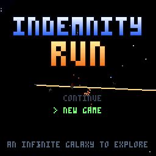
ThumbyElite drops you into an infinite procedurally generated galaxy with 1,000 credits and a random battered starter ship — every commander begins differently: maybe a SKIFF with a worn pulse laser, maybe a DART with a rattly autocannon. Earn the rest. From there, everything is yours to earn: trade between stations, run missions for the three great factions, hunt bounties, scoop salvage from wrecks, refit and upgrade your way up from a junk SKIFF to a BASILISK dreadnought.
The loop at the heart of the game: fly → fight or trade → dock → bank your progress → fit something better → fly further. Docking saves the game; dying costs you everything since your last dock. Risk is always yours to choose.
Controls
The Thumby Color has a d-pad, two face buttons (A B), two shoulder buttons (LB RB) and MENU. Flight uses chords: hold a shoulder button to change what the d-pad does.
In flight
| Input | Action |
|---|---|
| D-PAD | Pitch & yaw. UP = nose down (flight-stick convention — push forward to dive) |
| A | Fire the active weapon |
| B | Switch to the next mounted weapon |
| LB hold + LEFT/RIGHT | Roll |
| LB tap | Cycle target lock (nearest hostile first, then outward). With no hostiles around, locks the nearest salvage canister; with no salvage either, locks the local station (your way home) |
| RB hold + UP/DOWN | Throttle up / down |
| RB tap | Toggle flight assist (drift mode) |
| RB double-tap | Afterburner boost (2.2 s burn) |
| LB+RB together | Request docking (within 600 m of a station) · engage supercruise to your destination |
| MENU | Pause menu: resume, galaxy chart, system map, ship status |
In menus
| Input | Action |
|---|---|
| D-PAD | Move cursor / pan maps |
| A | Select / confirm / drill into details |
| B | Secondary action (sell, unfit, ship details) or back |
| LB | Open the detail sheet for the highlighted item (outfitting) |
| MENU | Back / close |
The HUD
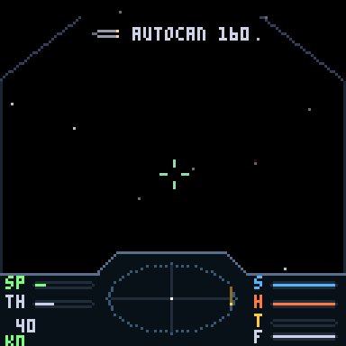
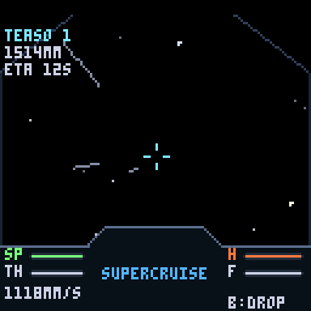
Left panel
- SP — your actual speed (boost pushes it past the bar's normal range). The number below is metres per second.
- TH — your throttle setting; with assist on, SP chases TH.
- DR appears when flight assist is off (drift); BS while boost burns.
- K# — kill tally.
Right panel — the four bars
- S — Shield. Absorbs damage first; recharges slowly after ~4.5 s without being hit.
- H — Hull. Your real health. Only docking repairs it.
- T — Heat. Every shot adds heat; at the top your weapons cut out until they cool. A klaxon warns near the limit.
- F — Fuel. Hyperspace range in light-years. Jumps spend their distance; refuel at stations.
The scanner
The centre disc is the classic Elite radar: you are the middle dot, contacts appear as blips with a vertical stalk showing height above or below your flight plane. Red = hostile, grey = neutral, gold (blinking) = salvage canisters — fast blink means component pod (weapons or equipment inside), slow blink means commodity cargo.
Target readout
Locking a target (tap LB) shows its name, tier, distance and its own S/H bars top-right, plus a red box around it on screen. Off screen, an arrowhead points the shortest way to turn — follow it and the target slides into view. Bounty-mission targets show ** MARK **.
Flight Model
The ship flies Newtonian-lite: thrust accelerates you along your nose, and your velocity bleeds toward where you point (with flight assist on). Key systems:
- Throttle (RB+UP/DOWN) sets a target speed; assist holds you there.
- Flight assist off (RB tap) — pure drift. Your nose turns but your velocity doesn't: aim sideways while sliding, the classic decoupled dogfight trick. DR shows while drifting.
- Boost (RB double-tap) — 1.8× speed for 2.2 s. Great for escapes and closing distance.
- Precision steering — turning has a ramp: the first touch turns at 1% rate, building to full over half a second. Tap for single-pixel aim corrections, hold to whip the nose around. Released axes keep a short momentum tail (~0.25 s), so alternating UP/RIGHT taps blend into smooth diagonal arcs.
Combat
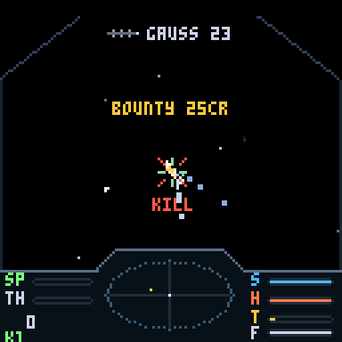
Combat is real-time 3D dogfighting. The flow: lock (tap LB) → close → put the nose on them (follow the turn arrow) → manage heat while you fire → break and re-approach when your shields drop.
Damage model
- Hits drain shields first (blue flicker), then hull (sparks). Ship shields recharge out of combat; hull damage is permanent until you dock.
- Your own ship rumbles on hits — soft buzz for shield, hard thump for hull. If you feel thumps, break off now.
- Kills pay an instant lawful bounty scaled by the victim's skill tier (see table), plus loot often spills from the wreck.
| Pilot tier | Behaviour | Kill bounty |
|---|---|---|
| HARMLESS | Wide lazy turns, poor aim, light weapons | 25 cr |
| NOVICE | Slow reactions, basic loadout | 80 cr |
| CAPABLE | Decent aim, mixed weapons | 220 cr |
| DEADLY | Tight turns, leads shots, heavy guns | 600 cr |
| ELITE | Near player-grade agility, the best gear | 1,600 cr |
Heat
Every weapon adds heat per shot (the T bar). Past the red line a klaxon sounds; at the top, weapons refuse to fire until things cool. Big lasers and photons run hot; autocannons and missiles barely register. The Gunnery skill reduces all weapon heat.
Homing missiles
Lock a target, switch to HOMING (B), fire. The seeker steers at 1.7 rad/s toward the target you had locked at launch — fired nose-on it almost always connects; a hard-jinking ace can outturn one fired from the side. No lock = flies straight as a dumbfire.
Weapons
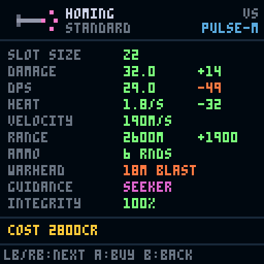
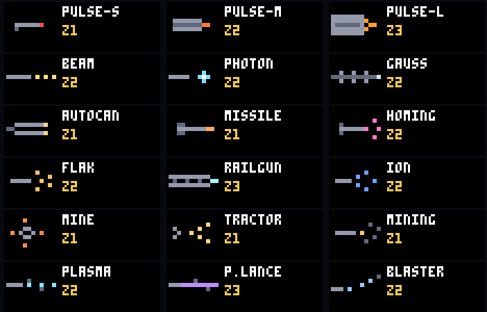
Nine weapon families. Each mount on your hull has a size (Z1–Z3); a weapon fits any slot of its size or larger. Base stats:
| Weapon | Size | Damage | DPS | Heat/s | Velocity | Range | Ammo | List price |
|---|---|---|---|---|---|---|---|---|
| PULSE-S | Z1 | 9 | 56 | 28 | hitscan | 600 m | energy | 600 |
| PULSE-M | Z2 | 16 | 73 | 34 | hitscan | 700 m | energy | 1,800 |
| PULSE-L | Z3 | 28 | 93 | 40 | hitscan | 800 m | energy | 4,800 |
| BEAM | Z2 | 4/tick | 80 | 64 | hitscan | 500 m | energy | 2,600 |
| PHOTON | Z2 | 34 | 62 | 25 | 260 m/s | 1,100 m | energy | 3,400 |
| GAUSS | Z2 | 40 | 44 | 7 | 1,400 m/s | 1,700 m | 24 rds | 5,200 |
| AUTOCAN | Z1 | 5 | 71 | 17 | 750 m/s | 900 m | 160 rds | 900 |
| MISSILE | Z1 | 45 + 22 m blast | 56 | 2.5 | 220 m/s | 2,000 m | 8 rds | 1,200 |
| HOMING | Z2 | 32 + 18 m blast | 29 | 1.8 | 190 m/s, seeks | 2,600 m | 6 rds | 2,800 |
Quality & integrity
Every weapon (and equipment item) is an instance with a quality grade and a wear state. Effective damage = base × quality × condition:
| Grade | Tag | Output | Price |
|---|---|---|---|
| Salvaged | SLV | ×0.80 | cheap, found in wrecks |
| Standard | STD | ×1.00 | shop stock |
| Reinforced | RNF | ×1.12 | uncommon drops |
| Military | MIL | ×1.22 | rare drops from aces |
| Prototype | PRO | ×1.35 | the jackpot |
Condition (0–100%) scales output from ×0.6 to ×1.0 — a 70% PROTOTYPE still beats a fresh STANDARD. Repair at any outfitting bay; the Tech skill cuts repair prices.
Ammo
Ballistic weapons carry magazines. Rounds persist between fits — no free top-ups. Docking automatically rearms you and charges per round: autocannon 1 cr, gauss 8 cr, missile 35 cr, homing 55 cr (you'll see REARMED -N CR on arrival). Shop weapons come loaded; salvage fits at 40% load.
Equipment — Shields & Armor
Defence works exactly like weapons: your ship has one shield-generator slot and one armor slot, separate from weapon mounts, each holding an instance with size, quality and integrity.
- Size Z1–Z3 multiplies your hull's base protection ×1.0 / ×1.3 / ×1.6 / ×2.0 (frame tier caps what each hull can take).
- Quality and integrity multiply on top, exactly like weapons.
- Flying bare (slot empty) leaves you at a weak ×0.55 baseline — always keep something fitted.
- Shield gens and armor plates drop as salvage (~1 in 4 component pods), can sit in your rack, swap-fit from it, repair, and sell.
List prices: shields 1,400 cr (Z1) / 2,800 (Z2) / 5,040 (Z3); armor 1,100 / 2,200 / 3,960 — times quality. Trading in your old unit returns ~40% of its value.
Salvage & Loot
Destroyed ships spill canisters; better pilots drop better gear. Some sites also hold derelict debris fields — loot floating free, most often at beacons and planets in dangerous space.
- Canisters carry a pulsing beacon: gold = commodity cargo, cyan = component pod (weapons / shields / armor). Same colours on the scanner.
- Tap LB with no hostiles around to lock the nearest canister — gold brackets, live distance, edge arrow.
- Scoop by flying within 22 m. Slow down! A scoop run at full throttle is a collision course.
- Canisters drift but never expire — finish the fight first, then sweep the field at leisure. They're gone only when you leave the area.
The rack
Scooped components go to your salvage rack (size varies by ship — a REAVER carries 5, an ATLAS 8, a DART just 1). From outfitting you can fit them to free mounts, swap equipment into its slot, or sell (35–65% of list by condition). Each racked item also occupies a cargo slot.
Travel
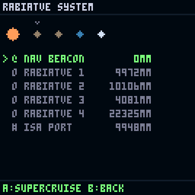
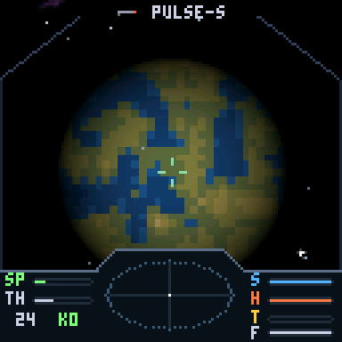
Supercruise
In-system distances are measured in megametres (1 Mm = 1,000 km) — normal engines would take days. Supercruise compresses the trip: speed builds from a 2 Mm/s floor toward a 3,000 Mm/s ceiling, then the drive brakes you automatically on approach. The HUD ETA models the full accelerate-cruise-brake envelope. Throttle still works — ease off to fine-tune an approach. B drops you out anywhere mid-flight.
Hyperspace
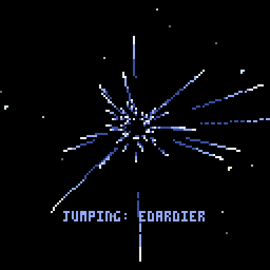
Jumps between stars cost fuel equal to the distance (tank: 30 ly, refill at stations) and are limited by your hull's jump range — bigger, costlier ships reach further (SKIFF 6.5 ly → BASILISK 12.5 ly). The galaxy literally opens up as you upgrade: sparse sectors and remote high-tech yards need long legs to reach.
The Galaxy
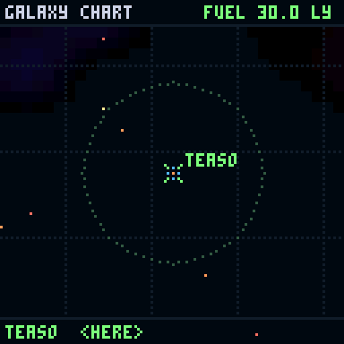
The galaxy is infinite and deterministic: every star, planet, economy and pirate derives from your save's galaxy seed. Fly 10,000 light-years in any direction and there's always more.
Star classes
| Class | Colour | Share | Character |
|---|---|---|---|
| M | red dwarf | 40% | dim, tight habitable zones |
| K | orange | 22% | modest systems |
| G | yellow | 16% | sun-like, good odds of temperate worlds |
| F | yellow-white | 10% | bright, wide zones |
| A | white | 8% | big and brilliant (glow on the chart) |
| B | blue-white | 4% | giants — spectacular up close |
Systems hold 0–7 planets — lava, rock, ice, ocean, gas giants (some ringed) and rare earthlike worlds, placed by orbital temperature. Stations orbit the better real estate.
Government, threat & factions
- Six government types from Anarchy to Corporate. Government drives threat level (0–4): how many pirates spawn and how skilled they are.
- Anarchy and Feudal systems have black markets — the only places that trade illegal goods.
- Three majors carve up the map in large sector blobs: the COALITION, the DOMINION and the FREEHOLDS. Reputation (−100…+100 each) rises with missions in their space and pays out as better mission rewards (+0.4% per point).
Trading
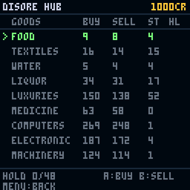
Twenty commodities. Each station's economy type (Agricultural, Industrial, High-Tech, Extraction, Refinery, Tourism, Military, Service) biases prices: producers sell cheap, consumers pay dear. Tech level and a per-station jitter move prices further.
| Good | Galactic avg | Good | Galactic avg |
|---|---|---|---|
| WATER | 4 | ALLOYS | 70 |
| FOOD | 8 | MACHINERY | 95 |
| HYDROGEN | 10 | ELECTRONIC | 140 |
| TEXTILES | 12 | LUXURIES | 180 |
| FUELCELLS | 18 | COMPUTERS | 220 |
| MINERALS | 25 | RARE GEMS | 400 |
| LIQUOR | 35 | NARCOTICS | 320 ⚠ |
| METALS | 45 | WEAPONS | 150 ⚠ |
| TOOLS | 55 | SLAVES | 90 ⚠ |
| MEDICINE | 60 | CONTRABAND | 65 ⚠ |
⚠ illegal — tradeable only at black markets (Anarchy/Feudal systems), at juicy margins to match the danger of where you have to fly.
Stations & Docking
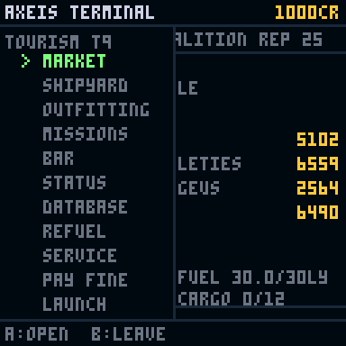
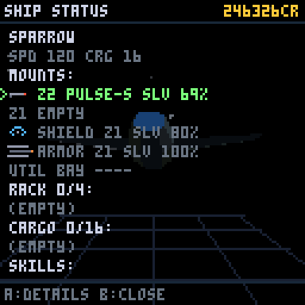
To dock: fly within 600 m of a station and press LB+RB. The docking computer takes over and glides you in. On arrival, the station:
- repairs nothing automatically — but rearms all magazines for credits,
- pays out any completed missions,
- saves your game (this is the checkpoint system — see Death & Saves).
Services: MARKET (trade), SHIPYARD (hulls), OUTFITTING (weapons, equipment, repairs, salvage), MISSIONS (the board), BAR (rumours and local colour), STATUS, plus refuel.
Ships & the Shipyard
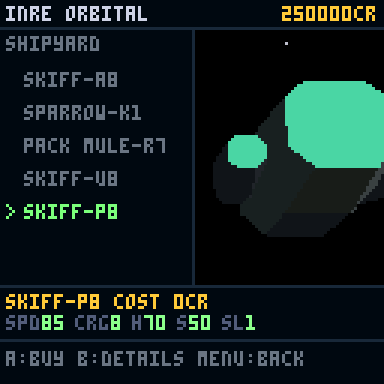
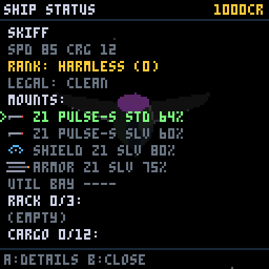
Every dockyard stocks its own selection. A station rolls five ships from its seed — class, look and name (like SPARROW-K4) are all unique to that yard. The same class re-rolled elsewhere looks different. Ship hunting is a real reason to explore; high-tech yards stock the big classes.
| Class | Price | Speed | Cargo | Jump | Mounts | Rack | Role |
|---|---|---|---|---|---|---|---|
| SKIFF | 900 | 85 | 8 | 6.5 ly | Z1 | 2 | where everyone starts |
| DART | 3,200 | 150 | 3 | 7.0 | Z2 | 1 | courier — speed is the cargo |
| PACK MULE | 7,000 | 80 | 32 | 7.5 | Z1 | 4 | first real freighter |
| SPARROW | 8,500 | 120 | 10 | 8.0 | Z2 Z1 | 3 | fight + carry workhorse |
| VIPER | 16,000 | 135 | 6 | 8.5 | Z2 Z2 | 2 | pure interceptor |
| MULE | 21,000 | 70 | 64 | 9.0 | Z2 Z1 | 6 | serious trading |
| REAVER | 24,000 | 125 | 16 | 9.5 | Z2 Z2 Z1 | 5 | the salvager-raider |
| MAULER | 42,000 | 110 | 12 | 10.0 | Z3 Z2 Z2 | 4 | gun platform |
| ATLAS | 58,000 | 60 | 140 | 11.0 | Z2 Z2 | 8 | a flying warehouse |
| BASILISK | 130,000 | 95 | 40 | 12.5 | Z3 Z3 Z2 | 6 | the endgame warship |
Trading in your current hull returns 70% of its list price. Mounted weapons migrate with you where they fit; the rest go to the rack (or are sold at salvage rates if there's no room). Equipment over the new frame's tier cap steps down a tier.
The fleet around you
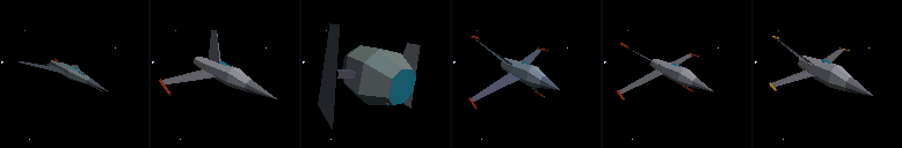
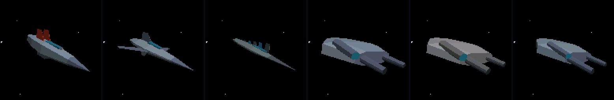
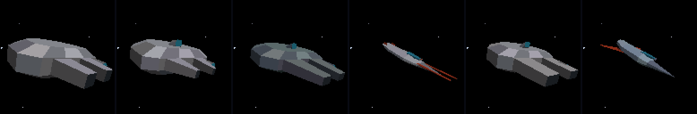
Missions, Bounties & Reputation
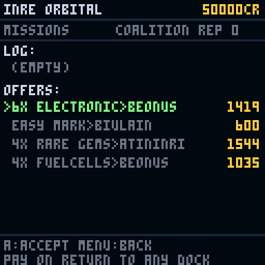
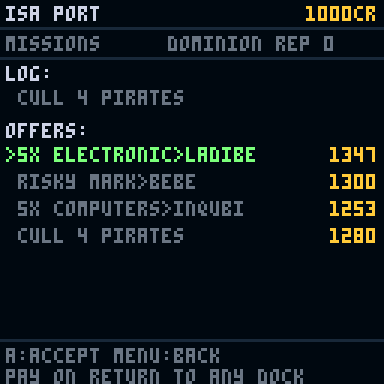
| Type | What it asks | Pay |
|---|---|---|
| DELIVERY | Haul N units of a good to a named station (cargo is handed to you — you need the hold space) | distance + cargo value based |
| CULL | Destroy N pirates, anywhere | ~320 cr per head |
| BOUNTY | Kill a marked pilot waiting at a named system's nav beacon | 600–6,500 cr by tier |
Bounty hunting, step by step
- Take a contract sized to your ship: EASY MARK (600 cr) up to ACE MARK (6,500 cr — brings an escort, flies a heavy hull).
- Open the galaxy chart: the hunt system pulses as a red diamond. Jump there.
- You arrive at the nav beacon — BOUNTY MARK DETECTED. Lock with LB; the mark shows ** MARK **.
- Kill it, then dock anywhere to collect (and bank the save).
Completed missions pay at the next dock and add reputation with the local faction (+8 bounty, +4 others). Rep boosts all future rewards in that faction's space — a +50 standing pays +20% on everything.
Pilot Skills
Four skills level from what you actually do (thresholds at 2, 5, 10, 18, 30, 50, 80, 120, 170 XP — ten levels):
| Skill | XP from | Each level gives |
|---|---|---|
| GUNNERY | kills, combat missions | −2.5% weapon heat |
| TRADING | profitable trades, deliveries | −1.2% on all purchases |
| TECH | scooping & repairing components | −5% repair costs |
| PILOTING | flying — boosts, docks, jumps | +2% turn rate |
A maxed Tech rating halves your refurbishing costs — the heart of the salvage business. Check your levels any time in SHIP STATUS.
Death & Saves
- Docking saves — automatically, every time. The save keeps your galaxy seed, ship, gear (with exact quality/wear/ammo), cargo, credits, reputation and mission log.
- Death = insurance recovery. You wake at your last dock with everything as it was then. Kills, loot and credits earned since that dock are gone. Undocked space is always at stake — that's the tension.
- CONTINUE on the title screen restores your universe exactly. NEW GAME rolls a fresh galaxy seed — new stars, names, markets, everything.
Quick-start: your first hour
- Take your starter ship to the local station (it's on the scanner; LB+RB in close to engage supercruise toward it, the same chord under 600 m requests docking).
- Check the MARKET — buy whatever's cheap that a neighbour wants. Grab a DELIVERY or EASY MARK from the board.
- Work the loop: deliveries + kill bounties + scooped loot. Sell salvage you can't use.
- First big purchase: a SPARROW (8,500) — fights and hauls. Or a PACK MULE if the trading bug bit you.
- Fit a shield upgrade before you fit a bigger gun. Staying alive earns more than alpha damage.
- Watch the chart for High-Tech systems — their yards stock the serious hardware.